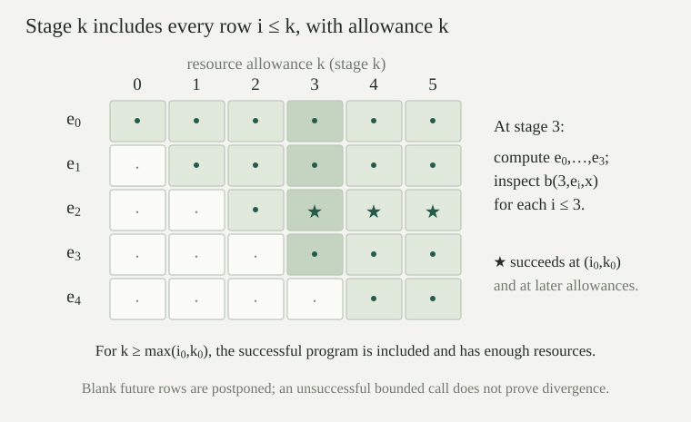

Use the unary paired-input programs from recursive programs, writing \(E(c,x)\) for \(\llbracket c\rrbracket(x)\). We use descriptive names for the same constructors: \(\mathsf{zero},\mathsf{succ},\mathsf{left},\mathsf{right}\) stand for \(\mathbf0,\mathbf S,\mathbf L,\mathbf R\), while \(\mathsf{prec}\) and \(\mathsf{find}\prime\) stand for \(\operatorname{rec}\) and \(\operatorname{find}\). The full list is
The two projections decode the square pairing \(\langle a,b\rangle\); composition evaluates its second program first. Pairing and composition are strict: every intermediate result they require must exist.
Define the program code by assigning the first four programs the numbers \(0,1,2,3\), respectively, and setting
Every natural number decodes to exactly one program. The decoded program \(c_e\) is the program with code \(e\). Define its indexed evaluation by \(\varphi_e(x)\simeq E(c_e,x)\), using equality of partial values. A program index specifies syntax, rather than a unique mathematical function: distinct programs can compute the same function. Several inputs are supplied by numerical tuple codes; in particular \(\varphi_e^{(2)}(a,x)\simeq\varphi_e(\langle a,x\rangle)\).
The general distinction between program descriptions and their behavior now has a specific effective model. A property of the computed partial function can be studied through Rice’s theorem.
The coding in is a bijection. Its constructor operations on numbers are primitive recursive, and structural recursion on programs preserves primitive recursiveness when each defining operation is primitive recursive in the immediate subprograms and their previously computed values.
For \(e\ge4\), compute the remainder of \(e-4\) on division by four. Remainders \(0,1,2\) give respectively pairing, primitive recursion and composition; unpair the quotient to obtain the two subcodes. Remainder \(3\) gives \(\mathsf{find}'\) with subcode \((e-7)/4\). Every resulting subcode is strictly below \(e\), by the pairing bounds. Strong induction therefore defines a terminating decoder. The quotient and remainder identify the outer constructor uniquely, and induction gives both inverse identities. No number is left over as an invalid program code.
The numerical constructor formulas are primitive recursive by arithmetic closure and primitive-recursive pairing. To carry out structural recursion, keep a coded list of answers for all smaller indices. Look up the immediate subcodes in that list and apply the appropriate defining operation. The history-recursion theorem, including parameters, proves primitive recursiveness.
The function \(U(e,x)\simeq\varphi_e(x)\) is partial recursive jointly in \(e,x\). Every unary partial recursive function is \(\varphi_e\) for some index \(e\). There is also a primitive-recursive relation \(T(e,x,k)\) such that
Let \(B(k,c,x)=B_k(c,x)\) be the bounded evaluator from bounded-evaluation correctness. It returns either failure or a natural-number output. Its correctness says that \(E(c,x)\downarrow=y\) exactly when \(B(k,c,x)=\operatorname{some}(y)\) for some \(k\). Increasing \(k\) preserves a successful answer.
The same finite-table construction is primitive recursive jointly in \(k,\#c,x\). At resource \(k+1\), retain the table at resource \(k\), and build the new tables for codes at most \(e\) in increasing code order. A request for a proper subprogram uses an earlier table at the current resource; a request for the same program uses the previous resource. Only inputs at most \(k\) can succeed at resource \(k+1\), so every table is finite. Code its failure entries by zero and its successful value \(y\) by \(y+1\). Coded finite-table lookup and history recursion with parameters give primitive-recursive table construction and lookup. Thus \(b(k,e,x)\), the encoded value of \(B(k,c_e,x)\), is primitive recursive.
Put \(T(e,x,k)\) iff \(b(k,e,x)>0\). Search for its least witness using unbounded search over a total test, and return \(b(k,e,x)-1\). If evaluation halts, some witness exists and correctness gives its output; if no witness exists, the search diverges. This proves joint partial recursiveness and the displayed equivalence. Finally, program equivalence supplies a program for every partial recursive function, and the bijective coding supplies its index.
We will use the stronger output form too: \(\varphi_e(x)\downarrow=y\) if and only if \(\exists k\,[b(k,e,x)=y+1]\). A resource bound records a finite successful computation; it is not an upper bound that can be predicted for every terminating program.
There is a primitive-recursive numerical function \(s(e,a)\) such that
for all \(e,a,x\). For tuples use the list code \(L(\bar x)=\operatorname{code}([x_0,\ldots,x_{n-1}])\). For each fixed pair of arities \(m,n\), there is a primitive-recursive transformation \(s_{m,n}(e,\bar a)\) with
Here \(\bar a\mathbin{{}^\frown}\bar x\) is the concatenation of the fixed \(m\)-tuple and the remaining \(n\)-tuple, including empty tuples. This is the parameter theorem, also called the s-m-n theorem.
Define a constant-output program by \(\mathsf{const}(0)=\mathsf{zero}\) and \(\mathsf{const}(a+1)=\mathsf{comp}(\mathsf{succ},\mathsf{const}(a))\). Induction gives \(E(\mathsf{const}(a),x)=a\); its numerical code is primitive recursive in \(a\). The program \(\mathsf{id}=\mathsf{pair}(\mathsf{left},\mathsf{right})\) returns its input by the inverse pairing identity. Now take
The inner program always returns \(\langle a,x\rangle\), and the outer one runs \(c_e\) on it. The displayed numerical construction uses only primitive recursion for constant codes and the primitive-recursive constructor operations; it does not run \(c_e\). This proves the exact partial-value identity even when the original program diverges. For fixed larger arities, encode the whole argument tuple by the list code from finite-sequence coding; fixed-arity tuple formation and extraction are primitive recursive. Use a program for coded concatenation to prepend the fixed tuple to the remaining tuple before running the original program. Its code is fixed; specialize its fixed-tuple input by the same construction and compose with \(c_e\).
Self-specialization \(s(a,a)\) gives the recursion theorem: a program can use its own index as an extra input.
Suppose \(\varphi_e(\langle 7,0\rangle)\) is undefined. Is \(s(e,7)\) still defined? What does its program do at input zero?
The number \(s(e,7)\) is defined: the transformation produces finite program text and is primitive recursive for every pair of inputs. At input zero its program forms \(\langle7,0\rangle\) and starts the original computation, so \(\varphi_{s(e,7)}(0)\) is undefined. Producing a specialized program and executing that program are different computations.
There is no total recursive function \(V(e,x)\) whose sections \(x\mapsto V(e,x)\) include every unary total recursive function.
If there were, \(d(x)=V(x,x)+1\) would be total recursive by composition and successor. For some index \(e\), universality would give \(d(x)=V(e,x)\) for every \(x\). At \(x=e\) this becomes \(V(e,e)+1=V(e,e)\), a contradiction. The issue is the simultaneous requirements of effective evaluation, totality and exhaustive coverage.
There is a unary total recursive function that is not primitive recursive.
In a program tree replace every \(\mathsf{find}'\) subtree by \(\mathsf{zero}\), leaving the other constructors and their recursively transformed children in place. Write \(r(e)\) for the resulting program code. The transformation is primitive recursive by . The programs it produces use only initial functions, composition, pairing and primitive recursion, so each evaluates to a total primitive-recursive function; prove this by structural induction. Conversely every unary primitive-recursive function has such a search-free program: pairing packages the inputs in its finite-arity definition, and the paired recursion rule is exactly the same recursion after those inputs are encoded.
Consequently \(G(e,x)=U(r(e),x)\) is total recursive and its sections include every unary primitive-recursive function. Put \(d(e)=G(e,e)+1\). If \(d\) were primitive recursive, some search-free program would compute it, giving an index \(j\) with \(G(j,x)=d(x)\) for every \(x\). Then \(d(j)=G(j,j)+1=d(j)+1\), which is impossible. This gives an explicit definition of the separating function without needing a growth-rate theorem.
The diagonal halting set \(K=\{e:\varphi_e(e)\downarrow\}\) has no total recursive characteristic function. Neither does the full halting relation \(H(e,x)\) defined by \(\varphi_e(x)\downarrow\).
Suppose a total recursive zero-one function \(h\) decides \(K\), with one meaning membership. Define \(g(x)=\mu t\,[h(x)=0]\), using a test independent of \(t\). This partial recursive function returns zero exactly when \(h(x)=0\) and is undefined exactly when \(h(x)=1\). By , \(g\simeq\varphi_j\) for some \(j\). Hence
a contradiction. A decision procedure for \(H\) would decide \(K\) by supplying the same number as program and input. Thus it cannot exist either.
The general diagonal obstruction shows why some problem escapes any fixed numbering. Here the particular halting problem is identified using the effective operations of this model.
The function \(g(x)\simeq U(x,x)+1\) is partial recursive. If \(g\simeq\varphi_j\), why does \(g(j)\simeq g(j)+1\) fail to contradict arithmetic?
It implies that \(g(j)\) is undefined. If it had a natural-number value \(n\), partial-value equality would force \(n=n+1\). But applying successor to an undefined partial value is also undefined, so the two sides can agree by both being undefined. The earlier contradiction for a total evaluator ruled out exactly this escape.
A set \(A\subseteq\mathbb N\) is decidable when its zero-one characteristic function is total recursive. It is computably enumerable, abbreviated c.e., when it is the domain of a unary partial recursive function. Thus a c.e. set has a procedure that stops exactly at its members; this is also called semidecision. Replacing a successful output by zero does not change the domain, so a semidecision procedure may always return zero when it stops.
Write \(W_e=\{x:\varphi_e(x)\downarrow\}\). Every c.e. set is some \(W_e\) by . A procedure recognizing membership need not stop with a negative answer outside the set. Relations of several variables are treated as sets of their tuple codes.
For \(A\subseteq\mathbb N\), the following are equivalent: \(A\) is c.e.; there is a primitive-recursive relation \(R(x,t)\) with \(x\in A\Longleftrightarrow\exists t\,R(x,t)\); there is a decidable relation with the same property.
If \(A=W_e\), take \(R(x,t)=T(e,x,t)\) from . Its witness certifies a finite successful computation. A primitive-recursive relation is decidable by primitive-recursive inclusion. Finally, for a decidable \(R\), search for its least witness. Its domain is exactly \(\{x:\exists t\,R(x,t)\}\), including when no input has any witness.
For \(A\subseteq\mathbb N\), these conditions are equivalent:
For a c.e. set, choose a primitive-recursive certificate relation \(R\) from . If \(A\ne\varnothing\), fix \(a\in A\), and define
This is primitive recursive by the case construction. Its outputs all belong to \(A\), and every \(x\in A\) is output at a pair containing one of its certificates. Thus its range is exactly \(A\). Primitive-recursive functions are total recursive, and total recursive functions are partial recursive; the empty set is the range of the everywhere-undefined partial recursive function \(x\mapsto\mu t\,[1=0]\).
It remains to show that the range of any partial recursive function \(\varphi_e\) is c.e. By the output form in ,
Pair \(x,k\) into one certificate. The bracketed relation is primitive recursive, so proves the result. This closes the implication cycle and covers empty ranges as well. Repetitions in an enumeration are allowed.
Given indices \(e,d\), there is a partial recursive procedure which, on input \(x\), returns an output from \(\varphi_e(x)\) or \(\varphi_d(x)\), and stops exactly when at least one of those computations stops.
At stage \(k\), inspect the two total bounded computations \(b(k,e,x)\) and \(b(k,d,x)\). Search for the first stage at which at least one is positive. If the first is positive, return its value minus one; otherwise return the second value minus one. The stage test and output selection are primitive recursive, so minimization followed by composition is partial recursive. Bounded-evaluation correctness proves that every returned value is a genuine output. Conversely, if either computation halts, some stage witnesses it, so the stage search terminates. This scheduling is called dovetailing.
For a countable family with a total recursive index sequence \(i\mapsto e_i\), on a fixed input, at stage \(k\) inspect the first \(k+1\) indices for \(k\) resources each. This finite search is total recursive: compute each \(e_i\), apply the total bounded evaluator, and combine the results by finite recursion. It need not be primitive recursive because the index sequence was assumed only total recursive. Any fixed successful computation is eventually both included and given enough resources. Running the first computation to completion before starting the next would lack this guarantee.

C.e. sets are closed under union and intersection. C.e. relations are closed under existential quantification over a natural-number variable. The inverse image of a c.e. set under a total recursive function is c.e.; so is its image.
Write \(x\in A\Longleftrightarrow\exists s\,R(x,s)\) and \(x\in B\Longleftrightarrow\exists t\,S(x,t)\), with primitive-recursive certificate relations. Intersection uses the paired certificate \(\langle s,t\rangle\) and test \(R(x,s)\wedge S(x,t)\). Union uses a tagged certificate saying which of the two tests succeeds. Existential projection \(\exists y\,A(x,y)\) combines \(y\) and its membership certificate into one pair. The tests remain primitive recursive by Boolean closure, pairing and composition. In operational terms, union can use ; waiting on one semidecision procedure first could block a positive answer from the other.
If \(A\) is the domain of a partial recursive \(f\), then \(g^{-1}(A)\) is the domain of \(f\circ g\), for total recursive \(g\). For the image, use : if \(A\) is empty its image is empty, and otherwise \(A\) is the range of a total recursive \(h\); then \(g(A)\) is the range of \(g\circ h\).
A set \(A\subseteq\mathbb N\) is decidable if and only if both \(A\) and its complement \(\mathbb N\setminus A\) are c.e.
If its characteristic function \(\chi_A\) is total recursive, search using the constant-in-stage tests \(\chi_A(x)=1\) and \(\chi_A(x)=0\). The resulting domains are \(A\) and its complement.
Conversely, choose primitive-recursive certificate relations \(R,S\) for \(A\) and its complement. Search for a code \(\langle i,t\rangle\) witnessing either \(i=0\wedge R(x,t)\) or \(i=1\wedge S(x,t)\). Exactly one of the two kinds of witnesses exists for each \(x\), so this search is total recursive. Return one for a witness of the first kind and zero for the second. The result is the total recursive characteristic function of \(A\). Equivalently, dovetail the two semidecision procedures and report whichever one halts.
The sets \(K=\{e:\varphi_e(e)\downarrow\}\) and \(K_0=\{\langle e,x\rangle:\varphi_e(x)\downarrow\}\) are c.e. and undecidable. Their complements are not c.e.
They have the primitive-recursive certificate descriptions \(e\in K\Longleftrightarrow\exists k\,T(e,e,k)\) and \(\langle e,x\rangle\in K_0\Longleftrightarrow\exists k\,T(e,x,k)\). Hence they are c.e. by . Their undecidability is , using pairing and unpairing for \(K_0\). If either complement were c.e., would make the corresponding halting set decidable, a contradiction.
Can the empty set be the range of a total function \(\mathbb N\to\mathbb N\)? Can a singleton be enumerated by an injective total function? If the enumeration has not yet produced a number, have we learned that it is absent?
No total function has empty range: its value at zero already belongs to its range. A singleton cannot be the range of an injective total function either, since the outputs at zero and one would have to agree. Constant functions enumerate singletons once repetitions are allowed. Finally, failure to have appeared in a finite initial segment does not establish absence. A c.e. enumeration need not be increasing, and there is generally no computable stage after which absence is settled; if there were a membership decision procedure for every c.e. set, it would decide the halting sets.